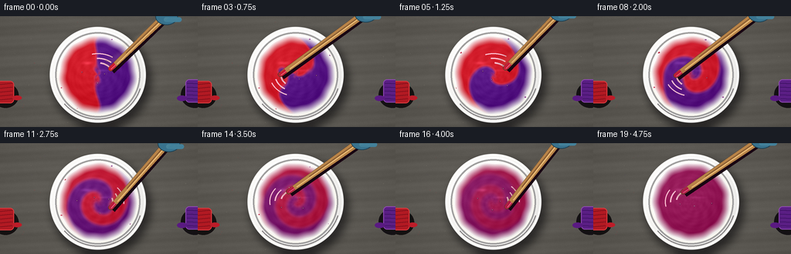
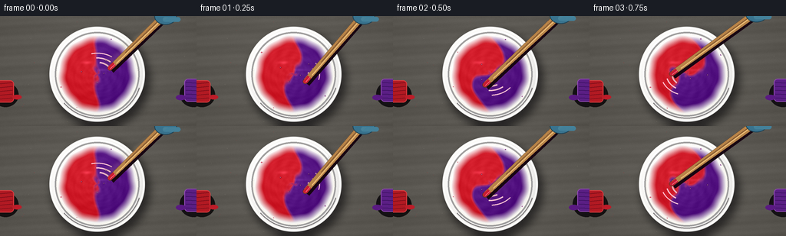

CODING AGENTS AS PIXEL WORLD MODELS
traex/GPT-5.6-Sol · material_0003
点击播放 · 原生 RGB 像素
逐轮保存的候选
回放视频、检查图与代码变化。
每份候选均可单独播放。实际图片检查记录在下方工具轨迹中。
候选 01播放与检查图
点击播放 · 原生 RGB 像素


展开代码变化
--- 上一保存版本
+++ 本次保存版本
@@ -0,0 +1,263 @@
+from pathlib import Path
+import math
+import numpy as np
+import cv2
+from PIL import Image, ImageDraw, ImageFilter
+import artifact_io
+
+# Deterministic, procedural text-to-video rendering.
+ROOT = Path(__file__).resolve().parent
+W, H, N = 256, 144, 20
+S = 3
+WW, HH = W*S, H*S
+rng = np.random.default_rng(20261110)
+
+
+def smoothstep(a, b, x):
+ x = np.clip((x-a)/(b-a), 0.0, 1.0)
+ return x*x*(3.0-2.0*x)
+
+
+def sc(v):
+ return int(round(v*S))
+
+
+def pts(seq):
+ return [(sc(x), sc(y)) for x, y in seq]
+
+# A fixed, softly textured slate/paint-studio surface prevents temporal flicker.
+yy, xx = np.mgrid[0:HH, 0:WW].astype(np.float32)
+noise = rng.normal(0, 1, (HH, WW)).astype(np.float32)
+noise = cv2.GaussianBlur(noise, (0, 0), 2.5*S)
+fine = rng.normal(0, 1, (HH, WW)).astype(np.float32)
+# Subtle horizontal grain and broad uneven illumination.
+grain = (3.0*np.sin(yy/12.5 + 0.7*np.sin(xx/97.0)) +
+ 1.7*np.sin(yy/4.2 + xx/73.0))
+vignette = -14.0*((xx-WW*.49)/(WW*.72))**2 - 11.0*((yy-HH*.46)/(HH*.80))**2
+base = np.empty((HH, WW, 3), np.float32)
+base_col = np.array([93, 92, 88], np.float32)
+for c, shift in enumerate([2.0, 0.0, -2.0]):
+ base[..., c] = base_col[c] + shift + 7.0*noise + .65*fine + grain + vignette
+base = np.uint8(np.clip(base, 0, 255))
+# Fine scratches in the tabletop.
+bg = Image.fromarray(base, 'RGB')
+bgd = ImageDraw.Draw(bg, 'RGBA')
+for i in range(34):
+ y = rng.uniform(2, 142); x = rng.uniform(-15, 250); ln = rng.uniform(8, 55)
+ val = int(rng.integers(35, 120))
+ bgd.line(pts([(x,y), (x+ln,y+rng.uniform(-.7,.7))]), fill=(val,val,val,25), width=max(1,sc(.25)))
+# Tiny old paint pinpricks suggest a working surface without distracting.
+for i in range(38):
+ x = rng.uniform(4,252); y = rng.uniform(4,140); r = rng.uniform(.18,.48)
+ col = [(174,42,50,60),(98,46,126,55),(208,201,177,40)][i%3]
+ bgd.ellipse((sc(x-r),sc(y-r),sc(x+r),sc(y+r)), fill=col)
+
+# Bowl geometry.
+cx, cy = 126.5, 76.0
+outer_r = 61.5
+fluid_r = 50.8
+X = xx/S; Y = yy/S
+R = np.sqrt((X-cx)**2 + (Y-cy)**2)
+
+
+def rgba_layer():
+ return Image.new('RGBA', (WW, HH), (0,0,0,0))
+
+
+def add_background_props(im):
+ """Partly cropped paint caps at the sides reinforce the two source colors."""
+ d = ImageDraw.Draw(im, 'RGBA')
+ # red cap / daub, left edge
+ d.ellipse((sc(-10),sc(87),sc(24),sc(119)), fill=(20,17,17,80))
+ d.rounded_rectangle((sc(-12),sc(84),sc(18),sc(113)), radius=sc(5), fill=(178,26,35,255), outline=(221,64,66,230), width=sc(1))
+ for y in [89,94,99,104,109]:
+ d.line(pts([(-4,y),(16,y-2)]), fill=(116,13,24,170), width=sc(1))
+ d.ellipse((sc(16),sc(103),sc(28),sc(109)), fill=(189,29,41,105))
+ # purple cap / daub, right edge
+ d.ellipse((sc(234),sc(85),sc(270),sc(119)), fill=(20,17,20,80))
+ d.rounded_rectangle((sc(240),sc(82),sc(270),sc(112)), radius=sc(5), fill=(91,31,133,255), outline=(146,76,181,230), width=sc(1))
+ for y in [87,92,97,102,107]:
+ d.line(pts([(242,y),(265,y+1)]), fill=(55,15,91,180), width=sc(1))
+ d.ellipse((sc(229),sc(103),sc(242),sc(110)), fill=(90,26,130,100))
+
+
+def bowl_underlay(im):
+ # Soft directional cast shadow.
+ sh = rgba_layer()
+ sd = ImageDraw.Draw(sh, 'RGBA')
+ sd.ellipse((sc(cx-outer_r+2), sc(cy-outer_r+5), sc(cx+outer_r+7), sc(cy+outer_r+10)), fill=(8,7,10,155))
+ sh = sh.filter(ImageFilter.GaussianBlur(sc(5.2)))
+ im.alpha_composite(sh)
+ # Radial porcelain with lower-right shade and cool upper-left reflection.
+ bowl = np.zeros((HH, WW, 4), np.uint8)
+ mask = np.clip((outer_r+1.0-R)*S, 0, 1)
+ edge = np.clip((outer_r-R)/8.5, 0, 1)
+ light = 235 + 13*edge - 15*((X-cx)/outer_r)*.45 + 7*((cy-Y)/outer_r)
+ bowl[...,0] = np.clip(light+3,0,255)
+ bowl[...,1] = np.clip(light+2,0,255)
+ bowl[...,2] = np.clip(light,0,255)
+ bowl[...,3] = np.uint8(mask*255)
+ im.alpha_composite(Image.fromarray(bowl,'RGBA'))
+ # Ceramic rim rings.
+ d = ImageDraw.Draw(im, 'RGBA')
+ d.ellipse((sc(cx-outer_r),sc(cy-outer_r),sc(cx+outer_r),sc(cy+outer_r)), outline=(255,255,252,235), width=sc(2.0))
+ d.ellipse((sc(cx-55.2),sc(cy-55.2),sc(cx+55.2),sc(cy+55.2)), outline=(159,158,158,210), width=sc(2.2))
+ d.arc((sc(cx-58),sc(cy-58),sc(cx+58),sc(cy+58)), 198, 321, fill=(255,255,255,205), width=sc(2.0))
+ d.arc((sc(cx-58),sc(cy-58),sc(cx+58),sc(cy+58)), 18, 139, fill=(126,123,124,105), width=sc(1.2))
+
+
+def paint_frame(fi):
+ """Analytic viscous advection: equal red and purple halves shear into spirals and diffuse."""
+ p = fi/(N-1)
+ dx = (X-cx)/fluid_r
+ dy = (Y-cy)/fluid_r
+ r = np.sqrt(dx*dx+dy*dy)
+ th = np.arctan2(dy,dx)
+ # Differential rotation winds the original equal left/right pools into fine spiral ribbons.
+ wind = 0.68*fi * np.maximum(0.0, 1.12-r)**1.42
+ # Stirrer creates a small precessing secondary eddy.
+ stirphase = -0.55 + fi*1.24
+ sx = .34*np.cos(stirphase); sy = .25*np.sin(stirphase)
+ qx, qy = dx-sx, dy-sy
+ qr2 = qx*qx+qy*qy
+ local = 1.05*np.exp(-qr2/.105)*np.sin(np.arctan2(qy,qx)-stirphase)
+ source_theta = th - wind - local
+ source_x = r*np.cos(source_theta)
+ # Slight lobe deformation makes the marbling organic instead of mathematically perfect.
+ source_x += .055*np.sin(3*source_theta + 8*r - .58*fi)
+ raw = 1.0/(1.0+np.exp(np.clip(source_x*68.0, -50, 50))) # left half = red
+ raw = cv2.GaussianBlur(raw.astype(np.float32),(0,0), max(.7*S, (.55+2.0*p)*S))
+ # Turbulent mixing damps the red-violet contrast toward the exact 50/50 blend.
+ blend = smoothstep(.30, 1.0, p)
+ contrast = (1.0-blend)**.72
+ frac = np.asarray(.5 + (raw-.5)*contrast, dtype=np.float32)
+ # Base pigments; their equal average is a saturated burgundy-magenta.
+ red = np.array([211.,29.,43.])
+ purple = np.array([91.,26.,137.])
+ rgb = purple[None,None,:]*(1-frac[...,None]) + red[None,None,:]*frac[...,None]
+ # Thick wet paint: broad directional light, embossed interfaces, spiral brush ridges.
+ gx = cv2.Sobel(frac,cv2.CV_32F,1,0,ksize=3)
+ gy = cv2.Sobel(frac,cv2.CV_32F,0,1,ksize=3)
+ ridge = np.clip(np.sqrt(gx*gx+gy*gy)*3.0,0,1)
+ spiral_ridge = np.sin(10.0*th - 15.0*r - fi*1.25)
+ spiral_ridge *= np.exp(-((r-.56)/.45)**2)
+ directional = 10*(-.55*dx-.84*dy) - 13*r*r
+ texture = 2.0*np.sin(34*r-3.2*th+fi*.33) + 1.2*np.sin(67*r+5*th)
+ rgb += directional[...,None] + texture[...,None]
+ rgb += (17*ridge + 3.2*spiral_ridge)[...,None]
+ # Irregular fluid edge and dark meniscus.
+ edge_radius = 1.0 + .010*np.sin(7*th+fi*.55)+.007*np.sin(13*th-fi*.4)
+ inside = r <= edge_radius
+ meniscus = np.clip((r-.92)/.08,0,1)
+ rgb *= (1-.16*meniscus[...,None])
+ # Moving elongated wet highlights on raised paint.
+ hi = np.exp(-(((dx+.30-.035*np.cos(fi*.7))/.19)**2 + ((dy+.30)/.055)**2)*2.0)
+ hi += .55*np.exp(-(((dx-.17)/.28)**2 + ((dy+.11)/.038)**2)*2.0)
+ rgb += hi[...,None]*np.array([31,25,31])[None,None,:]
+ rgba = np.zeros((HH,WW,4),np.uint8)
+ rgba[...,:3] = np.uint8(np.clip(rgb,0,255))
+ soft = np.clip((edge_radius-r)*S*1.6,0,1)
+ rgba[...,3] = np.uint8(255*soft)
+ return Image.fromarray(rgba,'RGBA'), frac
+
+
+def paint_details(im, fi, frac):
+ d = ImageDraw.Draw(im,'RGBA')
+ p = fi/(N-1)
+ phase = -.55 + fi*1.24
+ # Fast-moving circular sheen strokes / wake. These are short and translucent, not a static diagram.
+ for k in range(3):
+ rad = 20 + 7*k
+ start = math.degrees(phase-.85-.20*k)
+ end = math.degrees(phase-.18-.12*k)
+ alpha = int(80*(1-p*.45)/(k+1)**.35)
+ d.arc((sc(cx-rad),sc(cy-rad*.82),sc(cx+rad),sc(cy+rad*.82)), start, end,
+ fill=(255,194,211,alpha), width=sc(max(.7,2.0-.4*k)))
+ # Small flung droplets around the inner wall, strongest in the vigorous middle.
+ vigor = math.sin(math.pi*min(1,max(0,(fi+1)/17)))
+ fixed = [(-43,-29,1.4),(45,-25,1.2),(-48,17,.9),(42,29,1.0),(-26,44,.8),(19,-46,.75)]
+ for j,(ox,oy,rr) in enumerate(fixed):
+ if (j+fi)%3 != 0 and fi < 15:
+ wob=.9*math.sin(fi*1.7+j)
+ x=cx+ox+wob; y=cy+oy+.6*math.cos(fi+j)
+ # Local source side determines reddish versus violet droplet.
+ col=(190,31,60,190) if ox<0 else (108,29,127,185)
+ r0=rr*(.7+.5*vigor)
+ d.ellipse((sc(x-r0),sc(y-r0*.62),sc(x+r0),sc(y+r0*.62)),fill=col)
+ d.ellipse((sc(x-r0*.35),sc(y-r0*.28),sc(x+r0*.1),sc(y+r0*.02)),fill=(255,160,184,75))
+ # A few tiny central air bubbles catch light in the thick paint.
+ for j in range(4):
+ a=phase*.32+j*1.77
+ rad=9+6*j
+ x=cx+rad*math.cos(a); y=cy+.72*rad*math.sin(a)
+ rr=.65+.16*(j%2)
+ d.ellipse((sc(x-rr),sc(y-rr),sc(x+rr),sc(y+rr)), outline=(60,9,48,95), width=sc(.45))
+ d.ellipse((sc(x-.25),sc(y-.3),sc(x+.1),sc(y+.05)),fill=(255,210,224,130))
+
+
+def draw_stirrer(im, fi, frac):
+ phase = -.55 + fi*1.24
+ tip = np.array([cx+19.5*math.cos(phase), cy+15.0*math.sin(phase)])
+ anchor = np.array([217.0+3.0*math.sin(fi*.75), -6.0+2.5*math.cos(fi*.55)])
+ vec=anchor-tip; L=float(np.linalg.norm(vec)); n=np.array([-vec[1],vec[0]])/L
+ # Blurred previous-position sweep conveys vigorous motion at only 4 fps.
+ blur=rgba_layer(); bd=ImageDraw.Draw(blur,'RGBA')
+ for lag,alpha,w in [(0.22,60,7.2),(0.43,28,8.8)]:
+ ph=phase-lag
+ old=np.array([cx+19.5*math.cos(ph),cy+15*math.sin(ph)])
+ anc=anchor+np.array([-4*lag,2*lag])
+ bd.line(pts([tuple(old),tuple(anc)]),fill=(215,183,133,alpha),width=sc(w))
+ blur=blur.filter(ImageFilter.GaussianBlur(sc(2.3)))
+ im.alpha_composite(blur)
+ d=ImageDraw.Draw(im,'RGBA')
+ # Tool's shadow over the glossy paint.
+ d.line(pts([tuple(tip+np.array([2.0,2.8])),tuple(anchor+np.array([2.0,2.8]))]), fill=(24,5,18,105), width=sc(8.4))
+ # Tapered wooden mixing stick.
+ poly=[tip+n*3.2, anchor+n*4.8, anchor-n*4.8, tip-n*3.2]
+ d.polygon(pts([tuple(x) for x in poly]),fill=(184,132,73,255),outline=(91,57,32,230))
+ d.ellipse((sc(tip[0]-3.25),sc(tip[1]-3.25),sc(tip[0]+3.25),sc(tip[1]+3.25)),fill=(160,105,57,255),outline=(83,49,29,220),width=sc(.8))
+ # Long highlight and wood grain.
+ off=n*1.25
+ d.line(pts([tuple(tip+off+vec*.10),tuple(anchor+off)]),fill=(242,197,125,210),width=sc(1.0))
+ d.line(pts([tuple(tip-off*.6+vec*.28),tuple(anchor-off*.6)]),fill=(102,63,34,125),width=sc(.65))
+ # Paint-coated submerged end, sampled conceptually from 50/50 mixture over time.
+ p=fi/(N-1)
+ c=np.array([205,30,48])*(1-p*.6)+np.array([151,28,88])*(p*.6)
+ c=tuple(int(x) for x in c)
+ end2=tip+vec/L*8.2
+ d.line(pts([tuple(tip),tuple(end2)]),fill=(*c,245),width=sc(6.0))
+ d.ellipse((sc(tip[0]-2.7),sc(tip[1]-2.2),sc(tip[0]+2.7),sc(tip[1]+2.2)),fill=(*c,250))
+ d.line(pts([tuple(tip+n*.9),tuple(end2+n*.9)]),fill=(255,130,157,130),width=sc(.75))
+ # A partially cropped blue nitrile-gloved grip at the top right.
+ hand=rgba_layer(); hd=ImageDraw.Draw(hand,'RGBA')
+ a=anchor; unit=vec/L
+ grip=a-unit*4
+ hd.ellipse((sc(grip[0]-13),sc(grip[1]-10),sc(grip[0]+16),sc(grip[1]+12)),fill=(57,115,142,255),outline=(25,64,84,240),width=sc(1))
+ hd.rounded_rectangle((sc(grip[0]-2),sc(grip[1]+2),sc(grip[0]+21),sc(grip[1]+8)),radius=sc(3),fill=(67,131,157,245))
+ hd.arc((sc(grip[0]-9),sc(grip[1]-7),sc(grip[0]+11),sc(grip[1]+9)),190,335,fill=(129,181,197,170),width=sc(1.2))
+ im.alpha_composite(hand)
+
+frames=[]
+for fi in range(N):
+ im=bg.convert('RGBA')
+ add_background_props(im)
+ bowl_underlay(im)
+ paint,frac=paint_frame(fi)
+ im.alpha_composite(paint)
+ paint_details(im,fi,frac)
+ # Reassert crisp interior ceramic lip above the paint.
+ d=ImageDraw.Draw(im,'RGBA')
+ d.ellipse((sc(cx-53.3),sc(cy-53.3),sc(cx+53.3),sc(cy+53.3)),outline=(250,247,240,210),width=sc(2.0))
+ d.arc((sc(cx-52.5),sc(cy-52.5),sc(cx+52.5),sc(cy+52.5)),186,307,fill=(255,255,255,230),width=sc(1.15))
+ draw_stirrer(im,fi,frac)
+ # High quality antialias downsample and a restrained photographic finish.
+ rgb=im.convert('RGB').resize((W,H),Image.Resampling.LANCZOS)
+ arr=np.asarray(rgb).astype(np.float32)
+ # Very subtle camera sensor grain, fixed pattern shifted by frame to avoid frozen digital look.
+ g=np.roll(fine,fi*7,axis=1)[::S,::S]
+ arr += g[...,None]*.20
+ frames.append(np.uint8(np.clip(arr,0,255)))
+
+frames=np.stack(frames,axis=0)
+artifact_io.save(frames, ROOT)
+print(f"saved {frames.shape}, {frames.dtype}; mean={frames.mean():.2f}")
可观测工具轨迹
实际执行的命令与返回图片。
命令 1exit 0
/bin/bash -lc "cat prompt.txt && printf '\\n--- GENERATION_RULES ---\\n' && cat GENERATION_RULES.md"
命令 2exit 0
/bin/bash -lc "cat task_spec.json && printf '\\n--- FILES ---\\n' && find . -maxdepth 2 -type f -printf '%p\\n' | sort"
命令 3exit 0
/bin/bash -lc "command -v ffmpeg; command -v python3; python3 - <<'PY' mods=['PIL','numpy','cv2','cairo'] for m in mods: try: x=__import__(m); print(m,'OK',getattr(x,'__version__','')) except Exception as e: print(m,'NO',e) PY"
命令 4exit 0
/bin/bash -lc "sed -n '1,260p' artifact_io.py"
命令 5exit 2
/bin/bash -lc "cat > generate.py <<'PY'
from pathlib import Path
import math
import numpy as np
import cv2
from PIL import Image, ImageDraw, ImageFilter
import artifact_io
# Deterministic, procedural text-to-video rendering.
ROOT = Path(__file__).resolve().parent
W, H, N = 256, 144, 20
S = 3
WW, HH = W*S, H*S
rng = np.random.default_rng(20261110)
def smoothstep(a, b, x):
x = np.clip((x-a)/(b-a), 0.0, 1.0)
return x*x*(3.0-2.0*x)
def sc(v):
return int(round(v*S))
def pts(seq):
return [(sc(x), sc(y)) for x, y in seq]
# A fixed, softly textured slate/paint-studio surface prevents temporal flicker.
yy, xx = np.mgrid[0:HH, 0:WW].astype(np.float32)
noise = rng.normal(0, 1, (HH, WW)).astype(np.float32)
noise = cv2.GaussianBlur(noise, (0, 0), 2.5*S)
fine = rng.normal(0, 1, (HH, WW)).astype(np.float32)
# Subtle horizontal grain and broad uneven illumination.
grain = (3.0*np.sin(yy/12.5 + 0.7*np.sin(xx/97.0)) +
1.7*np.sin(yy/4.2 + xx/73.0))
vignette = -14.0*((xx-WW*.49)/(WW*.72))**2 - 11.0*((yy-HH*.46)/(HH*.80))**2
base = np.empty((HH, WW, 3), np.float32)
base_col = np.array([93, 92, 88], np.float32)
for c, shift in enumerate([2.0, 0.0, -2.0]):
base[..., c] = base_col[c] + shift + 7.0*noise + .65*fine + grain + vignette
base = np.uint8(np.clip(base, 0, 255))
# Fine scratches in the tabletop.
bg = Image.fromarray(base, 'RGB')
bgd = ImageDraw.Draw(bg, 'RGBA')
for i in range(34):
y = rng.uniform(2, 142); x = rng.uniform(-15, 250); ln = rng.uniform(8, 55)
val = int(rng.integers(35, 120))
bgd.line(pts([(x,y), (x+ln,y+rng.uniform(-.7,.7))]), fill=(val,val,val,25), width=max(1,sc(.25)))
# Tiny old paint pinpricks suggest a working surface without distracting.
for i in range(38):
x = rng.uniform(4,252); y = rng.uniform(4,140); r = rng.uniform(.18,.48)
col = [(174,42,50,60),(98,46,126,55),(208,201,177,40)][i%3]
bgd.ellipse((sc(x-r),sc(y-r),sc(x+r),sc(y+r)), fill=col)
# Bowl geometry.
cx, cy = 126.5, 76.0
outer_r = 61.5
fluid_r = 50.8
X = xx/S; Y = yy/S
R = np.sqrt((X-cx)**2 + (Y-cy)**2)
def rgba_layer():
return Image.new('RGBA', (WW, HH), (0,0,0,0))
def add_background_props(im):
\"\"\"Partly cropped paint caps at the sides reinforce the two source colors.\"\"\"
d = ImageDraw.Draw(im, 'RGBA')
# red cap / daub, left edge
d.ellipse((sc(-10),sc(87),sc(24),sc(119)), fill=(20,17,17,80))
d.rounded_rectangle((sc(-12),sc(84),sc(18),sc(113)), radius=sc(5), fill=(178,26,35,255), outline=(221,64,66,230), width=sc(1))
for y in [89,94,99,104,109]:
d.line(pts([(-4,y),(16,y-2)]), fill=(116,13,24,170), width=sc(1))
d.ellipse((sc(16),sc(103),sc(28),sc(109)), fill=(189,29,41,105))
# purple cap / daub, right edge
d.ellipse((sc(234),sc(85),sc(270),sc(119)), fill=(20,17,20,80))
d.rounded_rectangle((sc(240),sc(82),sc(270),sc(112)), radius=sc(5), fill=(91,31,133,255), outline=(146,76,181,230), width=sc(1))
for y in [87,92,97,102,107]:
d.line(pts([(242,y),(265,y+1)]), fill=(55,15,91,180), width=sc(1))
d.ellipse((sc(229),sc(103),sc(242),sc(110)), fill=(90,26,130,100))
def bowl_underlay(im):
# Soft directional cast shadow.
sh = rgba_layer()
sd = ImageDraw.Draw(sh, 'RGBA')
sd.ellipse((sc(cx-outer_r+2), sc(cy-outer_r+5), sc(cx+outer_r+7), sc(cy+outer_r+10)), fill=(8,7,10,155))
sh = sh.filter(ImageFilter.GaussianBlur(sc(5.2)))
im.alpha_composite(sh)
# Radial porcelain with lower-right shade and cool upper-left reflection.
bowl = np.zeros((HH, WW, 4), np.uint8)
mask = np.clip((outer_r+1.0-R)*S, 0, 1)
edge = np.clip((outer_r-R)/8.5, 0, 1)
light = 235 + 13*edge - 15*((X-cx)/outer_r)*.45 + 7*((cy-Y)/outer_r)
bowl[...,0] = np.clip(light+3,0,255)
bowl[...,1] = np.clip(light+2,0,255)
bowl[...,2] = np.clip(light,0,255)
bowl[...,3] = np.uint8(mask*255)
im.alpha_composite(Image.fromarray(bowl,'RGBA'))
# Ceramic rim rings.
d = ImageDraw.Draw(im, 'RGBA')
d.ellipse((sc(cx-outer_r),sc(cy-outer_r),sc(cx+outer_r),sc(cy+outer_r)), outline=(255,255,252,235), width=sc(2.0))
d.ellipse((sc(cx-55.2),sc(cy-55.2),sc(cx+55.2),sc(cy+55.2)), outline=(159,158,158,210), width=sc(2.2))
d.arc((sc(cx-58),sc(cy-58),sc(cx+58),sc(cy+58)), 198, 321, fill=(255,255,255,205), width=sc(2.0))
d.arc((sc(cx-58),sc(cy-58),sc(cx+58),sc(cy+58)), 18, 139, fill=(126,123,124,105), width=sc(1.2))
def paint_frame(fi):
\"\"\"Analytic viscous advection: equal red and purple halves shear into spirals and diffuse.\"\"\"
p = fi/(N-1)
dx = (X-cx)/fluid_r
dy = (Y-cy)/fluid_r
r = np.sqrt(dx*dx+dy*dy)
th = np.arctan2(dy,dx)
# Differential rotation winds the original equal left/right pools into fine spiral ribbons.
wind = 0.68*fi * (1.12-r)**1.42
# Stirrer creates a small precessing secondary eddy.
stirphase = -0.55 + fi*1.24
sx = .34*np.cos(stirphase); sy = .25*np.sin(stirphase)
qx, qy = dx-sx, dy-sy
qr2 = qx*qx+qy*qy
local = 1.05*np.exp(-qr2/.105)*np.sin(np.arctan2(qy,qx)-stirphase)
source_theta = th - wind - local
source_x = r*np.cos(source_theta)
# Slight lobe deformation makes the marbling organic instead of mathematically perfect.
source_x += .055*np.sin(3*source_theta + 8*r - .58*fi)
raw = 1.0/(1.0+np.exp(np.clip(source_x*68.0, -50, 50))) # left half = red
raw = cv2.GaussianBlur(raw.astype(np.float32),(0,0), max(.7*S, (.55+2.0*p)*S))
# Turbulent mixing damps the red-violet contrast toward the exact 50/50 blend.
blend = smoothstep(.30, 1.0, p)
contrast = (1.0-blend)**.72
frac = .5 + (raw-.5)*contrast
# Base pigments; their equal average is a saturated burgundy-magenta.
red = np.array([211.,29.,43.])
purple = np.array([91.,26.,137.])
rgb = purple[None,None,:]*(1-frac[...,None]) + red[None,None,:]*frac[...,None]
# Thick wet paint: broad directional light, embossed interfaces, spiral brush ridges.
gx = cv2.Sobel(frac,cv2.CV_32F,1,0,ksize=3)
gy = cv2.Sobel(frac,cv2.CV_32F,0,1,ksize=3)
ridge = np.clip(np.sqrt(gx*gx+gy*gy)*3.0,0,1)
spiral_ridge = np.sin(10.0*th - 15.0*r - fi*1.25)
spiral_ridge *= np.exp(-((r-.56)/.45)**2)
directional = 10*(-.55*dx-.84*dy) - 13*r*r
texture = 2.0*np.sin(34*r-3.2*th+fi*.33) + 1.2*np.sin(67*r+5*th)
rgb += directional[...,None] + texture[...,None]
rgb += (17*ridge + 3.2*spiral_ridge)[...,None]
# Irregular fluid edge and dark meniscus.
edge_radius = 1.0 + .010*np.sin(7*th+fi*.55)+.007*np.sin(13*th-fi*.4)
inside = r <= edge_radius
meniscus = np.clip((r-.92)/.08,0,1)
rgb *= (1-.16*meniscus[...,None])
# Moving elongated wet highlights on raised paint.
hi = np.exp(-(((dx+.30-.035*np.cos(fi*.7))/.19)**2 + ((dy+.30)/.055)**2)*2.0)
hi += .55*np.exp(-(((dx-.17)/.28)**2 + ((dy+.11)/.038)**2)*2.0)
rgb += hi[...,None]*np.array([31,25,31])[None,None,:]
rgba = np.zeros((HH,WW,4),np.uint8)
rgba[...,:3] = np.uint8(np.clip(rgb,0,255))
soft = np.clip((edge_radius-r)*S*1.6,0,1)
rgba[...,3] = np.uint8(255*soft)
return Image.fromarray(rgba,'RGBA'), frac
def paint_details(im, fi, frac):
d = ImageDraw.Draw(im,'RGBA')
p = fi/(N-1)
phase = -.55 + fi*1.24
# Fast-moving circular sheen strokes / wake. These are short and translucent, not a static diagram.
for k in range(3):
rad = 20 + 7*k
start = math.degrees(phase-.85-.20*k)
end = math.degrees(phase-.18-.12*k)
alpha = int(80*(1-p*.45)/(k+1)**.35)
d.arc((sc(cx-rad),sc(cy-rad*.82),sc(cx+rad),sc(cy+rad*.82)), start, end,
fill=(255,194,211,alpha), width=sc(max(.7,2.0-.4*k)))
# Small flung droplets around the inner wall, strongest in the vigorous middle.
vigor = math.sin(math.pi*min(1,max(0,(fi+1)/17)))
fixed = [(-43,-29,1.4),(45,-25,1.2),(-48,17,.9),(42,29,1.0),(-26,44,.8),(19,-46,.75)]
for j,(ox,oy,rr) in enumerate(fixed):
if (j+fi)%3 "'!= 0 and fi < 15:
wob=.9*math.sin(fi*1.7+j)
x=cx+ox+wob; y=cy+oy+.6*math.cos(fi+j)
# Local source side determines reddish versus violet droplet.
col=(190,31,60,190) if ox<0 else (108,29,127,185)
r0=rr*(.7+.5*vigor)
d.ellipse((sc(x-r0),sc(y-r0*.62),sc(x+r0),sc(y+r0*.62)),fill=col)
d.ellipse((sc(x-r0*.35),sc(y-r0*.28),sc(x+r0*.1),sc(y+r0*.02)),fill=(255,160,184,75))
# A few tiny central air bubbles catch light in the thick paint.
for j in range(4):
a=phase*.32+j*1.77
rad=9+6*j
x=cx+rad*math.cos(a); y=cy+.72*rad*math.sin(a)
rr=.65+.16*(j%2)
d.ellipse((sc(x-rr),sc(y-rr),sc(x+rr),sc(y+rr)), outline=(60,9,48,95), width=sc(.45))
d.ellipse((sc(x-.25),sc(y-.3),sc(x+.1),sc(y+.05)),fill=(255,210,224,130))
def draw_stirrer(im, fi, frac):
phase = -.55 + fi*1.24
tip = np.array([cx+19.5*math.cos(phase), cy+15.0*math.sin(phase)])
anchor = np.array([217.0+3.0*math.sin(fi*.75), -6.0+2.5*math.cos(fi*.55)])
vec=anchor-tip; L=float(np.linalg.norm(vec)); n=np.array([-vec[1],vec[0]])/L
# Blurred previous-position sweep conveys vigorous motion at only 4 fps.
blur=rgba_layer(); bd=ImageDraw.Draw(blur,'"'RGBA')
for lag,alpha,w in [(0.22,60,7.2),(0.43,28,8.8)]:
ph=phase-lag
old=np.array([cx+19.5*math.cos(ph),cy+15*math.sin(ph)])
anc=anchor+np.array([-4*lag,2*lag])
bd.line(pts([tuple(old),tuple(anc)]),fill=(215,183,133,alpha),width=sc(w))
blur=blur.filter(ImageFilter.GaussianBlur(sc(2.3)))
im.alpha_composite(blur)
d=ImageDraw.Draw(im,'RGBA')
# Tool's shadow over the glossy paint.
d.line(pts([tuple(tip+np.array([2.0,2.8])),tuple(anchor+np.array([2.0,2.8]))]), fill=(24,5,18,105), width=sc(8.4))
# Tapered wooden mixing stick.
poly=[tip+n*3.2, anchor+n*4.8, anchor-n*4.8, tip-n*3.2]
d.polygon(pts([tuple(x) for x in poly]),fill=(184,132,73,255),outline=(91,57,32,230))
d.ellipse((sc(tip[0]-3.25),sc(tip[1]-3.25),sc(tip[0]+3.25),sc(tip[1]+3.25)),fill=(160,105,57,255),outline=(83,49,29,220),width=sc(.8))
# Long highlight and wood grain.
off=n*1.25
d.line(pts([tuple(tip+off+vec*.10),tuple(anchor+off)]),fill=(242,197,125,210),width=sc(1.0))
d.line(pts([tuple(tip-off*.6+vec*.28),tuple(anchor-off*.6)]),fill=(102,63,34,125),width=sc(.65))
# Paint-coated submerged end, sampled conceptually from 50/50 mixture over time.
p=fi/(N-1)
c=np.array([205,30,48])*(1-p*.6)+np.array([151,28,88])*(p*.6)
c=tuple(int(x) for x in c)
end2=tip+vec/L*8.2
d.line(pts([tuple(tip),tuple(end2)]),fill=(*c,245),width=sc(6.0))
d.ellipse((sc(tip[0]-2.7),sc(tip[1]-2.2),sc(tip[0]+2.7),sc(tip[1]+2.2)),fill=(*c,250))
d.line(pts([tuple(tip+n*.9),tuple(end2+n*.9)]),fill=(255,130,157,130),width=sc(.75))
# A partially cropped blue nitrile-gloved grip at the top right.
hand=rgba_layer(); hd=ImageDraw.Draw(hand,'RGBA')
a=anchor; unit=vec/L
grip=a-unit*4
hd.ellipse((sc(grip[0]-13),sc(grip[1]-10),sc(grip[0]+16),sc(grip[1]+12)),fill=(57,115,142,255),outline=(25,64,84,240),width=sc(1))
hd.rounded_rectangle((sc(grip[0]-2),sc(grip[1]+2),sc(grip[0]+21),sc(grip[1]+8)),radius=sc(3),fill=(67,131,157,245))
hd.arc((sc(grip[0]-9),sc(grip[1]-7),sc(grip[0]+11),sc(grip[1]+9)),190,335,fill=(129,181,197,170),width=sc(1.2))
im.alpha_composite(hand)
frames=[]
for fi in range(N):
im=bg.convert('RGBA')
add_background_props(im)
bowl_underlay(im)
paint,frac=paint_frame(fi)
im.alpha_composite(paint)
paint_details(im,fi,frac)
# Reassert crisp interior ceramic lip above the paint.
d=ImageDraw.Draw(im,'RGBA')
d.ellipse((sc(cx-53.3),sc(cy-53.3),sc(cx+53.3),sc(cy+53.3)),outline=(250,247,240,210),width=sc(2.0))
d.arc((sc(cx-52.5),sc(cy-52.5),sc(cx+52.5),sc(cy+52.5)),186,307,fill=(255,255,255,230),width=sc(1.15))
draw_stirrer(im,fi,frac)
# High quality antialias downsample and a restrained photographic finish.
rgb=im.convert('RGB').resize((W,H),Image.Resampling.LANCZOS)
arr=np.asarray(rgb).astype(np.float32)
# Very subtle camera sensor grain, fixed pattern shifted by frame to avoid frozen digital look.
g=np.roll(fine,fi*7,axis=1)[::S,::S]
arr += g[...,None]*.20
frames.append(np.uint8(np.clip(arr,0,255)))
frames=np.stack(frames,axis=0)
artifact_io.save(frames, ROOT)
print(f\"saved {frames.shape}, {frames.dtype}; mean={frames.mean():.2f}\")
PY
python3 generate.py
ls -lh pixels.npz inspection.png transition_check.png index.html frames/00.png frames/19.png"命令 6exit 0
/bin/bash -lc 'python3 generate.py && ls -lh pixels.npz inspection.png transition_check.png index.html frames/00.png frames/19.png'
命令 7exit 0
/bin/bash -lc "python3 - <<'PY'
from pathlib import Path
import json, numpy as np
from PIL import Image
spec=json.loads(Path('task_spec.json').read_text())
z=np.load('pixels.npz')['pixels']
assert z.shape==(144,256,20), z.shape
assert z.dtype==np.uint32
# Decode and verify all generated PNGs against packed artifact.
p=((z>>16)&255).astype(np.uint8),((z>>8)&255).astype(np.uint8),(z&255).astype(np.uint8)
a=np.stack(p,-1).transpose(2,0,1,3)
assert a.shape==(20,144,256,3)
for i in range(20):
q=np.asarray(Image.open(f'frames/{i:02d}.png').convert('RGB'))
assert np.array_equal(a[i],q)
# Useful render sanity metrics: temporal activity and convergence of interior color variance.
y,x=np.mgrid[:144,:256]; mask=(x-126.5)**2+(y-76)**2<44**2
changes=np.mean(np.abs(np.diff(a.astype(np.int16),axis=0)),axis=(1,2,3))
# chromatic spread in an annularly safe region (exclude tool pixels by robust 10-90 range)
for i in [0,5,10,15,19]:
q=a[i][mask].astype(float)
chrom=q[:,0]-q[:,2]
print(f'frame {i:02d}: RGB mean {q.mean(0).round(1)}, robust R-B spread {(np.percentile(chrom,90)-np.percentile(chrom,10)):.1f}')
print('temporal MAD min/mean/max:',changes.min().round(2),changes.mean().round(2),changes.max().round(2))
print('verified:',a.shape,a.dtype,'all frames nonidentical=',bool(np.all(changes>0)))
PY
python3 -m py_compile generate.py
find frames -maxdepth 1 -name '*.png' | wc -l"保存候选 1 份；完成命令 7 次；可验证图片返回 0 张。原始 API 响应与完整日志保留在本地。